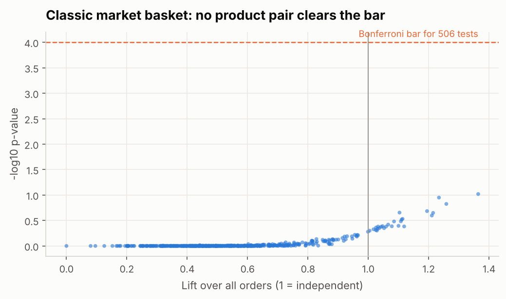

What we tested

0 of 506
product pairs pass the test. “Bought X, also bought Y” finds nothing.
$3.9k a year
given away by a 10%-off combo, for little extra sales.
No gain
from complex AI over a simple rule for who adds an item.
Tests in notebooks 01–03 and 05